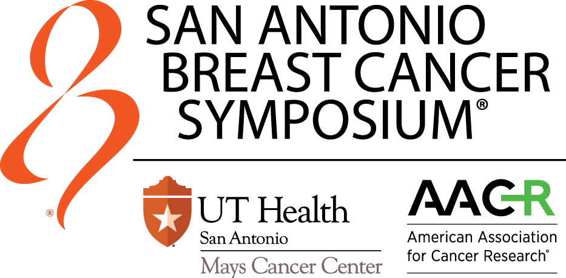
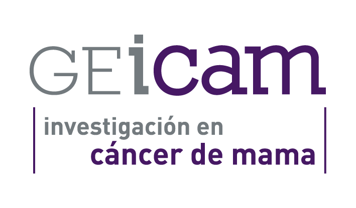
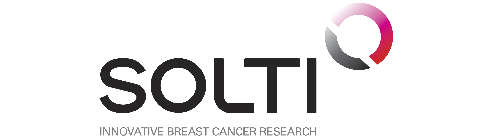
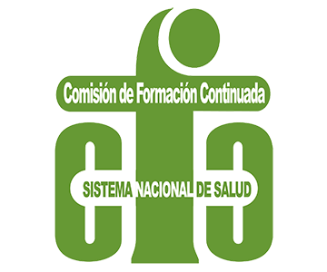

State of the Art in Breast Cancer: Self-Assessment Program
Superando la
Resistencia Endocrina
Medicina de Precisión, Secuenciación y Humanismo. El programa definitivo para reconfigurar el tratamiento en la recaída luminal precoz.
"La medicina de precisión no solo inhibe vías moleculares; libera el proyecto vital de la paciente."
Un Cambio de Paradigma:
De la Hormonoterapia a la Precisión.
La Justificación Clínica en la Recaída Precoz.
La vanguardia oncológica exige actualizar competencias hoy.
Metodología UX y Certificación Oficial.
Un entorno virtual de aprendizaje diseñado para garantizar la adquisición de competencias, exigiendo una navegación secuencial requerida por la Comisión Nacional de Formación Continuada.
-
school
Evaluación Formativa Continua
Cuestionarios interactivos (Self-Assessments) al final de cada módulo con feedback razonado referenciado a las últimas guías y ensayos clínicos.
-
auto_stories
Contenidos de Clase Mundial
Malla curricular basada estrictamente en recursos de ASCO, JCO y resúmenes del SABCS.
-
bolt
Flexibilidad Asíncrona
Estudio adaptativo 100% online con soporte audiovisual avanzado (animaciones de vías moleculares) para agendas médicas saturadas.

Evidencia de VanguardiaObjetivos del Programa.
Capacitar al especialista a través de tres dimensiones fundamentales para la nueva era de la oncología mamaria.
Dimensión Molecular y Diagnóstica
Comprender la interconexión de la vía PI3K/AKT/mTOR y determinar las indicaciones y el *timing* óptimo para la solicitud de paneles NGS y biopsia líquida.
Dimensión Clínica y Secuenciación
Analizar la evidencia de las triples combinaciones terapéuticas de nueva generación y establecer algoritmos de decisión para pacientes con recaída precoz tras adyuvancia.
Dimensión Humanista
Prevenir toxicidades específicas (hiperglucemia, estomatitis), implementar la Toma de Decisiones Compartida (SDM) y evaluar el impacto mediante PROs en la práctica diaria.
Capacitación Multidisciplinar.
Un abordaje integral frente al cáncer de mama.
Oncólogos Médicos
Responsables principales de la prescripción y estrategia de secuenciación en la enfermedad metastásica.
Ginecólogos (Senólogos)
Piezas fundamentales en el diagnóstico inicial, la obtención de tejido (biopsias) y la participación activa en los comités multidisciplinares.
Patología Molecular
Fundamentales para la correcta ejecución del perfilado genómico (NGS) y la interpretación de biomarcadores clave (PIK3CA, ESR1, HER2).
Farmacia y MIR
Claves en la dispensación de terapias, revisión de interacciones e integración de la medicina de precisión desde la etapa formativa temprana.
El Currículum Científico.
3 Módulos de Excelencia.
Estructurado bajo los máximos estándares UX para CFC: Scientific Core, Critical Debate, Practice Insights, casos, auto-evaluación y multimedia en cada módulo.
Comprender la biología de la resistencia a terapias hormonales y la necesidad innegable del testeo genómico temprano.
Estructura del Módulo (8 Apartados)
- play_arrow Executive Brief (Podcast): Impacto de la vía PI3K/AKT/mTOR y el perfilado en 1L.
- play_arrow Scientific Core: Vías de resistencia genómica y mutaciones activadoras.
- play_arrow Critical Debate: Biopsia líquida vs. tejido en recaída precoz.
- play_arrow Further Readings: Guías ASCO y consensos sobre biomarcadores predictivos.
- play_arrow Practice Insights: Algoritmo para la solicitud de paneles NGS.
- play_arrow Clinical Cases: Interpretación genómica en recaída metastásica temprana.
- play_arrow Self-Assessment: Prevalencia de mutaciones clave (PIK3CA) y vías de señalización.
- play_arrow Multimedia: Animación médica 3D de mecanismos de retroalimentación PI3K y RE.
Análisis de la evidencia clínica para establecer la mejor secuencia terapéutica, con especial foco en la recaída "precoz".
Estructura del Módulo (8 Apartados)
- play_arrow Executive Brief (Podcast): Saltos terapéuticos y la lógica de las triples combinaciones.
- play_arrow Scientific Core: Estado del arte de inhibidores de CDK4/6, SERDs y vía PI3K/AKT.
- play_arrow Critical Debate: Intensidad de tratamiento: Dobletes vs. Triples combinaciones.
- play_arrow Further Readings: Abstracts de congresos (SABCS) sobre mejoras en SG y SLP.
- play_arrow Practice Insights: Tablas de decisión secuencial para retrasar la quimioterapia.
- play_arrow Clinical Cases: Manejo del switch terapéutico en progresión agresiva.
- play_arrow Self-Assessment: Evaluación interactiva sobre hitos de supervivencia y métricas.
- play_arrow Multimedia: Línea de tiempo interactiva (Patient Journey) del continuo luminal.
Posicionar la preservación de la calidad de vida y la gestión proactiva de nuevas toxicidades crónicas como el verdadero éxito.
Estructura del Módulo (8 Apartados)
- play_arrow Executive Brief (Podcast): Eficacia sin comprometer la biografía metabólica.
- play_arrow Scientific Core: Fisiopatología de la hiperglucemia, estomatitis y análisis de PROs.
- play_arrow Critical Debate: La adherencia en el alambre y el rol del equipo multidisciplinar.
- play_arrow Further Readings: Guías para el manejo de complicaciones metabólicas y soporte.
- play_arrow Practice Insights: Checklist de consulta (cribado de glucosa, HbA1c, profilaxis bucal).
- play_arrow Clinical Cases: Role-play de comunicación y Toma de Decisiones Compartida (SDM).
- play_arrow Self-Assessment: Cuestionario sobre escalado de tratamiento y métricas de soporte.
- play_arrow Multimedia: Video-entrevista dual (Médico-Paciente) sobre el impacto de la recaída.
Dirección Académica Institucional.
KOLs de Referencia en la Oncología Mamaria.
Dr. Pere Gascón
Catedrático, director de la cátedra CELLEX de Oncología y del Conocimiento Multidisciplinar. Ex jefe del Servicio de Hematología y Oncología en la Facultad de Medicina del Estado de New Jersey, USA. Ex jefe del Servicio de Oncología Médica y Coordinador Científico del Instituto Clínico de Enfermedades Hemato-Oncológicas del Hospital Clínic de Barcelona.
Dr. Aleix Prat
Jefe del Servicio de Oncología Médica. Hospital Clínic de Barcelona. Expresidente del Grupo Académico SOLTI.
Dra. Eva Ciruelos
Coordinadora Unidad Cáncer de Mama. Hosp. Univ. 12 de Octubre (Madrid). Vicepresidenta del Grupo SOLTI y miembro activo de GEICAM.



Hacia un interpretación
holística de la paciente.
Evitando toxicidades. Maximizando el proyecto vital.
Nuestra propuesta educativa expande el horizonte puramente farmacológico. Dotamos al clínico de herramientas para el manejo proactivo de complicaciones metabólicas, transformando la innovación en terapias dirigidas en un soporte real a la biografía de la paciente. Únete como mecenas institucional.